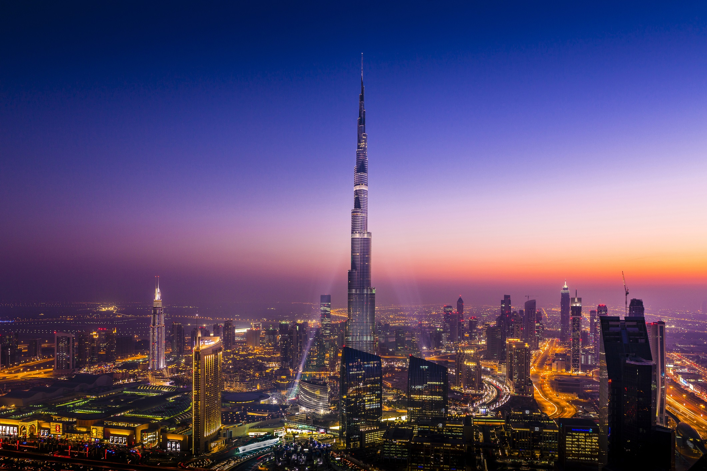

The Burj Khalifa in Dubai, United Arab Emirates, is the tallest building in the world.Standing at 828 meters (2,717 feet), this iconic skyscraper features 163 floors. Construction began in 2004, and the tower officially opened in January 2010. Designed by Skidmore, Owings & Merrill, its unique shape is inspired by the spider lily flower and Islamic architecture. The tower houses luxury residences, corporate offices, a hotel, and high-altitude observation decks. Built to help Dubai diversify its economy toward tourism, the Burj Khalifa stands as a monumental global engineering marvel